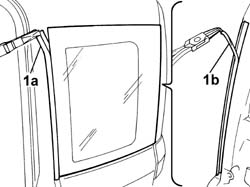
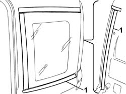
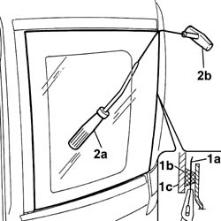
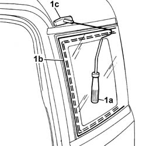
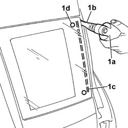
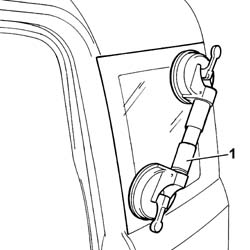
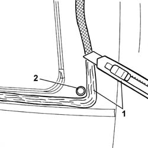
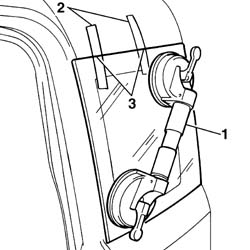
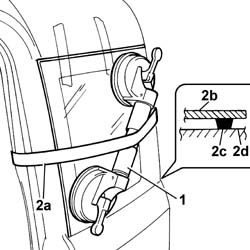

7035C54 side window one lh or rh r r includes cleaning of housing
- Path
- Procedures > 70 FITTINGS > 7035 BODYSHELL WINDOWS > 7035C passenger compartment side fixed windows > 7035C54 side window one lh or rh r r includes cleaning of housing
- Kind
- repair procedure (removal / refitting; the operation number is the code)
- Applies to
- all engines; all production periods
- Interactive page
- https://sloeber94.github.io/elrnDB-fPnd/en/#/2753176
Applies to: all engines; all production periods
 Removing
Removing
 Refitting
RefittingDisconnect the battery negative terminal.
5540A44 L/H OR R/H TAIL LIGHT (ONE) - R+R
1. Using suitable pliers, remove the front (1a) and rear (1b) seals for the fixed side window.

Applies to: all engines; all production periods
1. Position a strip of suitable adhesive tape to protect the bodywork along the perimeter of the fixed side window.

Applies to: all engines; all production periods
1. Cut a section of harmonic wire about 50 cm long then, using pliers, insert one end (1a) of the harmonic wire through the bead of sealant (1b) which secures the fixed side window (1c).
2. Fix one end of the harmonic wire to the special retaining tool (2a), inside the vehicle, and the other end to the traction handle (2b) outside the vehicle.

Applies to: all engines; all production periods
1. The operator inside the car must press the end of the tool (1a) on the bead of sealant (1b) at about 30 cm from the point where the wire passes, whilst the other operator, outside the car, should pull the handle (1c), following the fixed side window surround.
Repeat the operation in sections of about 30 cm, until the whole of the bead of sealant is cut.

Applies to: all engines; all production periods
1. Use the vibrating knife (1a) with blade (1b) and cut the bead of sealant (1c) and the centering pins (1d).

Applies to: all engines; all production periods
1. Fit the suction pads on the fixed side window, remove the fixed side window and rest it on a suitable support stand.

Applies to: all engines; all production periods
Refitting
Removing1. Remove the residues of the centering pins from the fixed side window housing.
2. Using a suitable tool, cut and smooth off the bead of sealant in the fixed side window frame, so as to leave a thickness of between 0.25 and 1 mm, without scratching the paintwork.
3. Clean the fixed side window seating carefully with compressed air and thoroughly degrease with heptane.
If glueing takes place 60 minutes after cutting and smoothing the bead of sealant, treat the sealant surface with the specific activator and wait 15 minutes before fixing the rearscreen.
 | Type | Component | Name | Qty. |
|---|---|---|---|---|
- | Sealant | FIXED SIDE WINDOW. | PRIMER | - |
If necessary touch up the paintwork.

Applies to: all engines; all production periods
If the same fixed side window is being reused, carry out the following procedure:
7035C16 fixed rear side window one lh or rh clean edges and sand small abrasions
If this is not the case, use a new fixed side window and proceed as described below.
Stick the front and rear seals.
Stick the new centering pins.
Remove the adhesive tape positioned previously on the edges of the bodywork.
1. Test fit to locate the side window perfectly.
2. Once the fixed side window is located, mark the reciprocal positions of fixed side window and housing using strips of adhesive tape.
3. Cut the strips of adhesive tape and remove the fixed side window.

Applies to: all engines; all production periods
Use an air gun to extrude a bead of sealant as evenly as possible along the perimeter of the fixed side window.
| Type | Component | Name | Qty. |
|---|---|---|---|---|
- | Sealant | FIXED SIDE WINDOW. | 71711976 | - |
1. Position the fixed side window in its seating immediately after applying the sealant and bed it into position.
2. Fit the belt (2a) as shown in the figure and tension it so as to apply even pressure over the entire fixed side window, in order to ensure a perfect match between window (2b), sealant (2c) and fixed side window frame (2d).

Applies to: all engines; all production periods
5540A44 L/H OR R/H TAIL LIGHT (ONE) - R+R
Connect the battery negative terminal.
Topics linked from this page (2)
- 5540A44 L/H OR R/H TAIL LIGHT (ONE) - R+R
- 7035C16 fixed rear side window one lh or rh clean edges and sand small abrasions